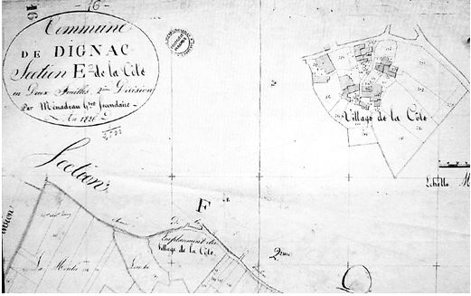
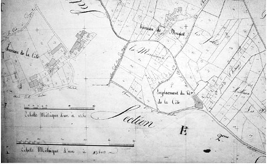

EXEMPLE D’ARPENTAGE
( DIGNAC, village de la Coste, milieu du 18ème siècle )
par Philippe PIAUD, AGC 1233
Le cadastre est une réalisation
ancienne : il existait déjà sous l’antiquité ; en effet, les
gouvernements ont toujours eu le souci de connaître avec plus ou moins
de précision l’étendue des biens fonciers afin d’établir au plus juste
les taxes foncières ; en clair, le cadastre n’aurait peut-être pas
existé si l’homme n’avait pas inventé les impôts !
En France, le cadastre existait sous l’ancien régime, mais pas
forcément de manière généralisée ; de plus, beaucoup de documents se
sont perdus avec le temps ; le cadastre napoléonien, réalisé dans la
première moitié du 19ème siècle, est par contre assez bien conservé :
en Charente, il vient d’être numérisé et mis en ligne sur le site du
Conseil Général.
Vers 1740, l’élection d’Angoulême, qui regroupait la partie centrale de
la province d’Angoumois, entreprit de réaliser un arpentage
systématique de l’ensemble des paroisses : il en reste des registres,
souvent en très bon état, qui précisent les superficies de l’ensemble
des parcelles, avec les noms de leur propriétaires et leur bases
fiscales.
A titre personnel, je me suis intéressé à l’arpentage de la commune de
Dignac, et en particulier au village de la Coste ( actuellement la Côte
) ; je souhaitais avoir des renseignements précis sur Jean BOISSEAU, un
de mes ancêtres, cerclier de son état et domicilié dans ce village.
En feuilletant l’ouvrage, je me suis rendu compte de la grande richesse
des renseignements fournis, ce qui m’a décidé à réaliser une petite
étude.
Le village de la Côte est situé au sud de la commune de Dignac, sur une
colline culminant à 216 m d’altitude ; il se trouve à environ 500 m à
l’ouest de la D 939 qui relie Angoulême à Périgueux. Le hameau a
conservé son caractère rural, avec des maisons anciennes, des bois de
châtaigniers aux alentours, comme autrefois ; mais le monde
contemporain l’a rattrapé, avec ses pavillons modernes (
vive l’agglomération
d’Angoulême ), son pylône téléphonique ( vive les portables ) et même
ses ralentisseurs, beaucoup d’automobilistes
( dont je suis )
considérant le village de la Côte comme un raccourci pour rejoindre la D 939.
L’arpentage de la paroisse de Dignac, au milieu du 18ème siècle,
est détaillé dans 3 registres ; les parcelles sont numérotées et
classées par village ; malheureusement, il n’y a pas de plan en annexe
; on peut par contre comparer cet arpentage avec le cadastre réalisé en
1826, soit plus de 80 ans plus tard. Le village de la Coste concerne
les numéros de 2343 à 2392, soit un total de 50 parcelles ; les
parcelles 2357 à 2361 sont situées « au renferme » ( ou « au renfermé »
) mais elles touchent les autres parcelles dépendant de la Coste ; ces
5 parcelles ne comportent d’ailleurs aucune maison.
Les mesures utilisées pour l’arpentage méritent quelques commentaires
car elles ne sont plus utilisées à notre époque ; pour nous aider, nous
disposons du précieux ouvrage de Etienne Munier : l’Angoumois à la fin
de l’ancien régime, réédité en 1981 par la librairie BRUNO SEPULCHRE.
Le document d’arpentage mentionne essentiellement le carreau et le journal :
- le carreau est un carré dont le côté mesure douze
pieds de Guyenne, lequel pied représentant environ 0.325 m ; la surface
du carreau d’Angoumois serait donc de ( 0.325 m x 12 )2 = 15.2 m2
- le journal représente une surface de 200 carreaux,
soit 30.4 ares ; Munier précise que le journal vaut 800 toises de
Guyenne ; une toise carrée ayant la superficie d’environ 3.8 m2, 800
toises nous donnent bien une surface de 3040 m2 ou 30.4 ares ; le
journal a été utilisé jusqu’au 20ème siècle et on dit communément que 3
journaux valent environ 1 hectare.
Il faut d’ailleurs
préciser que les mesures variaient beaucoup
d’une région à l’autre : cela ne simplifie donc pas les correspondances
avec les mesures actuelles.
Les domiciles sont au nombre de 25 ; certaines maisons ont
manifestement été coupées au gré des héritages, ce qui donne des
surfaces plutôt faibles : ainsi, le n° 2348 est constitué d’une simple
pièce commune ( appelée chambre ), d’une surface totale de 4 carreaux (
soit environ 61 m2 ) ; la chambre attenante ( le n° 2347 ) bénéficie
d’une surface un peu plus
grande ( environ
5 carreaux, soit 76 m2 ). En général, les maisons sont environnées d’un
petit bout de terrain : jardin, pré, aireau mais les superficies
demeurent modestes ; le domaine le plus important semble être celui de
Maurice MARCHOU : une surface de 118 carreaux, soit près de 1800 m2,
pour une maison de 2 pièces, une grange, un toit et un jardin : on est
loin de l’opulence. D’ailleurs, aucun domicile ne comporte plus de 2
pièces. La majorité des domiciles semble appartenir à leurs occupants ;
parmi les exceptions, notons la maison de Georges de ST AMANT de
Chazelles ( n° 2371 ) et les 2 maisons du sieur SOUCHET ( n° 2381
et 2382 ) : la première est affermée à Pierre DECESSAT, en
tant que métayer ; quant à la deuxième, elle dépend
d’une borderie ( ferme ) mais le fermier n’étant pas cité, elle est
peut-être inoccupée. Pour ce qui concerne la maison de Nicolas Louis
LONLAIGUE, le notaire, il est difficile de se prononcer : ce dernier
pouvait habiter au village de la Coste mais exercer son activité
professionnelle à La
Valette
( actuellement Villebois – Lavalette ), à environ 10 km.
En plus de sa maison ( n° 2349 ), Maurice MARCHOU possède aussi une
chambre au n° 2347 : cette chambre était-elle habitée ? On peut aussi
supposer l’existence de 2 Maurice MARCHOU, ce qui n’est pas impossible,
mais, dans ce cas, l’arpenteur aurait sans doute fait état d’un surnom
pour les distinguer.
Les noms des habitants révèlent l’implantation de plusieurs familles :
les noms ARTAUD, BOISSEAU, BERBINAUD reviennent 2 fois au niveau des
domiciles ; le nom PETIT 3 fois, le nom PERROT 5 fois ! Un certain
nombre de professions sont précisées : on trouve un notaire, 2
voituriers, un charpentier, un tisserand, un tailleur, 3 cercliers ( on
disait alors « cerclaires ») ; cette dernière profession est
particulièrement typique de la région de Dignac : en effet, le cerclier
exploitait les nombreux châtaigniers des environs pour fabriquer des
cercles entourant les barriques et les tonneaux ; une partie importante
de cette production devait sans doute aller vers Cognac car le secteur
de Dignac possédait peu de vignes. A notre époque, les cercles en
châtaignier sont toujours utilisés pour les barriques car on les cintre
facilement, et ils n’attirent pas les vers et autres insectes
xylophages. Jean BOISSEAU, l’un des 3 cercliers de La Coste, possédait
d’ailleurs plusieurs parcelles de châtaigneraies dans les environs.
Les parcelles non bâties sont assez représentatives pour Dignac : on
trouve des terres labourables, sans doute réservées aux céréales et aux
légumes, des
chènevières
( cultures de chanvre ), des jardins ( sans doute des potagers et des
vergers, les jardins d’agrément étant alors réservés aux nobles et
riches bourgeois ), des prés pour le bétail, des châtaigneraies
et un « communal », c’est-à-dire une parcelle appartenant à la
collectivité villageoise : ce communal, situé au niveau du chemin
vicinal, s’étend sur 50 carreaux, soit environ 750 m2 ; il est
difficile de connaître son utilisation usuelle mais il servait
peut-être de lieu de réunion pour les habitants du village ; les vignes
sont peu nombreuses, le terrain et le climat n’étant alors pas propre à
la maturation correcte du raisin ; sans doute fabriquait-on avec les
vignes de la Coste une piquette médiocre pour la consommation
quotidienne : n’oublions pas qu’à l’époque, l’eau était un véritable
bouillon de culture ( on ne connaissait pas les bactéries mais on
savait que l’eau véhiculait beaucoup de maladies ) ; aussi, la
consommation de vin était une nécessité absolue, l’alcool tuant les
germes vecteurs de maladies.
Le revenu engendré par les parcelles semble correspondre à un revenu
locatif, comme si les domiciles ou les terres étaient louées. Les
unités monétaires utilisées sont la livre et le sol ( 20 sols
représentant une livre ). Prenons l’exemple de la maison du cerclier
Jean BOISSEAU : d’une surface de 91 m2, elle génère un revenu/an de 3
livres ; or, en se mariant en 1768, Marie, l’un des 2 enfants
survivants de Jean BOISSEAU, a reçu une dot de 140 livres pour
tous droits dans les successions de ses parents ; une telle dot peut
être qualifiée de très moyenne pour la région : pourtant, cela
représente 47 ans de loyer pour la maison de son père ! En fait, la
valeur locative s’avérait importante surtout pour les terres, qui
produisaient la nourriture ; ainsi la plus belle parcelle du village,
appartenant à Jacques ARTAUD, dégage plus de valeur par son pré de 2
journaux que par son domaine bâti et son jardin, crédités d’un modeste
revenu de 5 livres.
ARPENTAGE DE LA PAROISSE DE DIGNAC Volume 2
années 1740 ; village de la Coste
AD 16 6 C 98
2343 MAISON composée d’une chambre, appentis, toit,
grange, aireau, jardin et pré, tenant d’un côté au chemin de la Coste à
la Berlerie, d’autre côté et d’un bout au chemin de la Vaure à Dignac,
d’autre bout au n° suivant
65 carreaux et 5 livres pour la maison et le jardin ; 2 journaux 54
carreaux et 13 livres 12 sols pour le pré Jacques
ARTAUD 2 journaux et 119 carreaux
18 livres 12 sols
2344 MAISON composée de 2 chambres, grange, four,
jardin, tenant d’un côté au n° précédent, d’autre côté au jardin des
héritiers de Léonard Petit, d’un bout au chemin de la Coste à la
Berlerie, d’autre bout au n° suivant Jean
PERROT, marchand voiturier 37 carreaux
5 livres
2345 CHAMBRE, appentis, jardin, tenant d’un côté et
d’un bout au n° précédent, d’autre côté au jardin de Maurice Marchou,
d’autre bout au chemin vicinal Jean CHAIGNEAU, dit
Rousset, tailleur 8 carreaux
3 livres
2346 JARDIN tenant des 2 côtés au jardin de Maurice
Marchou, d’un bout au n° précédent, d’autre bout au pré de Jacques
Artaud Louis SIMARD 7 carreaux
7 sols
2347 CHAMBRE et pré tenant, d’un côté et d’un bout au
jardin et pré de Jacques Artaud, d’autre côté au n° précédent, d’autre
bout au n° suivant
5 carreaux et 2 livres 13 sols la chambre ; 13 carreaux et 13
sols le pré Maurice MARCHOU 18
carreaux
3 livres 6 sols
2348 CHAMBRE tenant d’un côté au n° précédent,
d’autre côté et au bout à la maison de Jean Chaigneau, d’autre bout à
celle de Jean Perrot Louis SIMARD,
cerclier 4 carreaux
2 livres 10 sols
2349 MAISON composée de 2 chambres, grange, toit,
jardin, aireau, pré et vigne, tenant d’un côté au bois et pré de
Jacques Artaud, d’autre côté à la terre de Maurice Marchou, d’un bout
au jardin de Jean Chaigneau, d’autre à la sablière de Jacques Artaud
118 carreaux et 7 livres la maison et le jardin ; 41 carreaux et
2 livres 1 sol le pré ; 112 carreaux et 3 livres 4 sols la
vigne Maurice MARCHOU, voiturier 1
journal 71 carreaux
12 livres 5 sols
2350 MAISON composée de 2 chambres, toit, four et
jardin, tenant d’un côté au chemin vicinal, d’un bout et d’autre côté
au n° suivant, d’autre bout à la maison suivante Jean
PETIT 15 carreaux
2 livres 5 sols
2351 MAISON composée de 2 chambres, grange et jardin,
tenant d’un côté au n° précédent, d’autre au jardin de Jean Perrot,
d’un bout au n° suivant, d’autre bout au chemin de la Coste à la
Berlerie Les mineurs de feu Léonard
PETIT 20 carreaux
3 livres 10 sols
2352 MAISON composée d’une chambre, tenant d’un côté
et d’un bout au n° précédent, d’autre côté à la maison de Jean Petit,
d’autre bout au chemin vicinal
Raymond PERROT, cerclier 6 carreaux
3 livres
2353 MAISON composée d’une chambre, appentis en
masure, tenant d’un côté et d’un bout au chemin sus dit, d’autre côté
au jardin des héritiers de Jean Perrot, d’autre bout au n°
suivant Catherine PERROT, veuve de Gilles
GUILLARD 15 carreaux
1 livre 10 sols
2354 MAISON composée d’une chambre, toit et jardin,
tenant d’un côté au dit chemin, d’autre côté au n° suivant, d’un bout
au précédent, d’autre bout au jardin de Maurice
Marchou Jean GOUGUET 13 carreaux
3 livres
2355A MAISON, portion de grange et jardin, tenant
d’un côté au n° précédent, d’autre côté et des 2 bouts au n°
suivant Jean PETIT, dit Callot 15
carreaux
3 livres
2355B PORTION DE GRANGE, tenant d’un côté au n°
suivant, des autres parts au n° précédent Maurice
MARCHOU 5 carreaux
2 livres 10 s.
2356 MAISON composée d’une chambre, appentis et
jardin, tenant d’un côté au jardin de Catherine Perrot, d’autre côté au
n° suivant, d’un bout au chemin de Cloulas à la masure de Maurice
Marchou Les héritiers de Jean
PERROT 18 carreaux
3 livres 10 sols
2357
au Renferme TERRE tenant d’un côté et d’un bout
au n° suivant, d’autre côté à la terre de Maurice Marchou, d’autre bout
à la terre de Jean Gouguet Jean PETIT, dit
Callot 51 carreaux
1 livre 10 sols
2358
au Renferme TERRE tenant d’un côté au n° précédent,
d’autre côté au dit chemin, d’un bout au jardin des héritiers de Jean
Perrot, d’autre bout au n° suivant Maurice
MARCHOU 87 carreaux
2 livres 12 sols
2359
au
Renferme TERRE tenant d’un côté et d’un bout au n°
précédent, d’autre côté à la sablière de Catherine Perrot, d’autre bout
au dit chemin Jean GOUGUET 26
carreaux
15 sols
2360 au
Renferme COMMUNAL tenant de toutes parts au chemin
vicinal Communal 50 carreaux
2 sols
2361
au Renferme PRE tenant d’un côté et d’un bout au
chemin de servitude, d’autre côté au n° suivant et d’autre bout
au jardin de Pierre Boisseau Maurice
MARCHOU 75 carreaux
2 livres 12 sols
2362 GRANGE et jardin, tenant d’un côté au n°
précédent, d’autre côté à la grange du sieur Souchet, d’un bout au
chemin vicinal, d’autre bout au n° suivant Pierre
BERBINAUD 13 carreaux
2 livres 5 sols
2363 MAISON composée d’une chambre, tenant d’un côté
au pré de Maurice Marchou, d’autre côté au n° suivant, d’un bout au
précédent, d’autre bout au jardin de Pierre Boisseau
Pierre BERBINAUD et son fils, charpentier 10 carreaux
4 livres 10 sols
2364 MAISON composée de 2 chambres, grange, jardin,
toit et aireau, tenant d’un côté et d’un bout aux bâtiments du sieur
Souchet, d’autre côté au n° suivant, d’autre bout au
précédent Michel BERBINAUD
charpentier et Marie CALIN veuve de Jean BERBINAUD sa mère 20 carreaux
4 livres 10 sols
2365 MAISON composée d’une chambre, toit, enclos en
terre et pré, tenant d’un côté au pré du sieur Souchet, d’autre côté à
la terre de Jean Perrot, d’un bout au chemin de Dignac à la Vaure,
d’autre bout au n° suivant
12 carreaux et 3 livres 10 sols la maison ; 170 carreaux et 5
livres 2 sols la terre ; 50 carreaux et 1 livre 15 sols le pré
Sieur Nicolas Louis LONLAIGUE, notaire et procureur
à La Valette 1 journal 32 carreaux
10 livres 7 sols
2366 JARDIN tenant d’un côté et d’un bout au n°
précédent, d’autre côté au jardin de Pierre Boisseau, d’autre bout à la
maison de Pierre Berbinaud Jean
BOISSEAU 8 carreaux
8 sols
2367 MAISON composée de 2 chambres, tenant d’un côté
à la maison de Jean Demonsalut, d’autre côté et d’un bout au n°
suivant, d’autre bout à la maison de Jacques Artaud
Jean BOISSEAU,
cerclier 6 carreaux
3 livres
2368 MAISON composée de 2 chambres, toit, jardin,
tenant d’un côté au n° précédent, d’autre côté au suivant, d’un bout au
pré de Maurice Marchou, d’autre bout à la maison de Jacques
Artaud Pierre BOISSEAU,
tisserand 20 carreaux
3 livres 15 sols
2369 MAISON composée d’une chambre et jardin, tenant
d’un côté au n° précédent, d’autre côté au chemin de la Coste à la
Berberie, d’un bout au pré de Maurice Marchou, d’autre bout au n°
suivant Les héritiers de Antoine
PERROT 20 carreaux
3 livres 10 sols
2370 MAISON composée d’une chambre et aireau, tenant
d’un côté à la maison de Pierre Boisseau, d’autre côté au n° suivant,
d’un bout au jardin de Jean Demonsalut, d’autre bout au dit
chemin Jacques ARTAUD 10 carreaux
2 livres 10 sols
2371 MAISON composée d’une chambre tenant des 2 côtés
au n° précédent, d’un bout au jardin de Jean Demonsalut, d’autre bout
au dit chemin Georges de ST AMANT, de la paroisse de
Chazelles 5 carreaux
2 livres
2372 TERRE et chènevière, tenant d’un côté au n°
précédent, d’autre côté et d’un bout au chemin de la Coste à Douyat,
d’autre bout au n° suivant
46 carreaux et 1 livre 9 sols la terre ; 28 carreaux et 18 sols la
chènevière Jacques ARTAUD 74
carreaux
2 livres 7 sols
2373 TERRE tenant d’un côté au dit chemin, d’autre
côté au n° suivant, d’un bout au précédent, d’autre bout à Jean
Perrot Jean PERROT 21 carreaux
13 sols
2374 TERRE et chènevière, tenant d’un côté au n°
précédent, d’autre côté au n° suivant, d’un bout à la terre de Jacques
Artaud, d’autre bout à la terre de Jean Perrot
12 carreaux et 8 sols le terre et même chose pour la chènevière Marie PETIT 24 carreaux
16 sols
2375 TERRE tenant d’un côté et d’un bout au n°
précédent, d’autre côté au suivant, d’autre bout à la terre de Jacques
Artaud Louis SIMARD 4 carreaux
2 sols
2376 TERRE tenant d’un côté au n° précédent, d’autre
côté au suivant, d’un bout à la terre de Jacques Artaud, d’autre bout à
celle de Marie Petit Marguerite PIMARD, veuve de Jean
PERROT 4 carreaux
2 sols
2377 TERRE tenant d’un côté au n° précédent, d’autre
côté au suivant, d’un bout à la terre de Jacques Artaud, d’autre bout à
celle de Marie Petit
Raimond PERROT 4 carreaux
2 sols
2378 TERRE tenant d’un côté au n° précédent, d’autre
côté au suivant, d’un bout à la terre de Jacques Artaud, d’autre bout à
celle de Marie Petit
Jean CHAIGNEAU, dit Rousset 4 carreaux
2 sols
2379 TERRE tenant d’un côté au n° précédent, d’autre
côté à celle de Jean Demonsalut, d’un bout à la terre de Jacques
Artaud, d’autre bout au chemin de la Vaure à Dignac
les héritiers de Antoine PERROT 76 carreaux
2 livres 13 sols
2380 PRE tenant d’un côté à la terre de Marie
Petit, d’autre côté et d’un bout au chemin de la Vaure à Dignac,
d’autre bout au n° précédent Jean
PERROT 47 carreaux
1 livre 10 sols
2381 MAISON composée d’une chambre, grange, aireau,
toit, jardin, appentis et pré, tenant d’un côté au jardin de Jean
Demonsalut, d’un bout au dit chemin, d’autre côté au chemin de la Coste
à Douyat, d’autre bout au jardin de Pierre Berbinaud
65 carreaux et 7 livres pour la maison ; 175 carreaux et 6 livres 10
sols pour le pré Le sieur SOUCHET, pour sa métairie
de la Coste affermée à Pierre DECESSAT 1 journal et
40 carreaux
13 livres 10 sols
2382 MAISON composée de 2 chambres, toit, jardin,
tenant d’un côté au chemin de la Coste à Douyat, d’autre côté à la
maison de Marie Petit, d’un bout au chemin vicinal, d’autre bout au n°
suivant Le sieur SOUCHET pour sa
borderie 77 carreaux
7 livres
2383 TERRE tenant d’un côté au dit chemin, d’autre
côté au pré de Jean Chabot, d’un bout au n° précédent, d’autre bout à
un sentier
Le sieur SOUCHET, pour sa métairie de la Coste 120 carreaux
3 livres 6 sols
2384 GRANGE, tenant d’un côté et d’un bout au n°
précédent, d’autre côté au chemin vicinal, d’autre bout au n° suivant
Le sieur SOUCHET, pour sa métairie de la Coste 6 carreaux
2 livres
2385 GRANGE, tenant d’un côté et d’un bout au n°
précédent, d’autre côté au suivant, d’autre bout au dit
chemin Jean ARTAUD, dit le boiteux
6 carreaux
2 livres
2386 MAISON composée d’une chambre et aireau, tenant
d’un côté au n° précédent, d’autre côté au suivant, d’un bout au jardin
du sieur Souchet, d’autre bout au dit chemin Marie
PETIT, veuve de Pierre CHABOT 8 carreaux
4 livres
2387 MAISON composée de 2 chambres et toit, tenant
d’un côté et d’un bout au n° précédent, d’autre côté au suivant,
d’autre bout au chemin vicinal Jean ARTAUD, laboureur
tenant 2 bœufs 14 carreaux
5 livres
2388 PRE et CHATAIGNIERS, tenant d’un côté à la terre
du sieur Souchet, d’autre côté au n° suivant, d’un bout au précédent,
d’autre bout de Jean Artaud
54 carreaux et 1 livre 7 sols le pré ; 40 carreaux et 8 sols les
châtaigniers Marie PETIT, veuve de Pierre
CHABOT 94 carreaux
1 livre 15 sols
2389 TERRE et PRE, tenant d’un côté au n° précédent
et à la maison de Jean Artaud, d’autre côté aux châtaigniers de Jacques
et Jean Artaud, d’un bout au dit Jean Artaud, d’autre bout à la vigne
de Jean Artaud
1 journal 45 carreaux et 6 livres 2 sols pour le pré ; 65 carreaux et 1
livre 6 sols pour la terre Jean ARTAUD, dit le
boiteux 1 journal et 110 carreaux
7 livres 8 sols
2390 JARDIN tenant d’un côté et d’un bout au n°
précédent, d’autre côté à la terre de Pierre Berbinaud, d’autre bout au
n° suivant Jean ARTAUD, dit le
boiteux 63 carreaux
1 livre 11 sols
2391 JARDIN tenant d’un côté au n° précédent, d’autre
côté au suivant, d’un bout au chemin vicinal, d’autre bout à la terre
de Marie Petit Marie PETIT, veuve de Pierre
CHABOT 27 carreaux
13 sols
2392 TERRE tenant d’un côté au chemin vicinal,
d’autre côté au n° suivant, d’un bout au précédent, d’autre bout au
chemin de la Coste à Cloulas Le sieur SOUCHET, pour
sa métairie de la Coste 68 carreaux
1 livre 14 sols

VILLAGE DE LA COTE ( ZONE SUD )
CADASTRE DE DIGNAC 1826

VILLAGE DE LA COTE ( ZONE NORD )
CADASTRE DE DIGNAC 1826